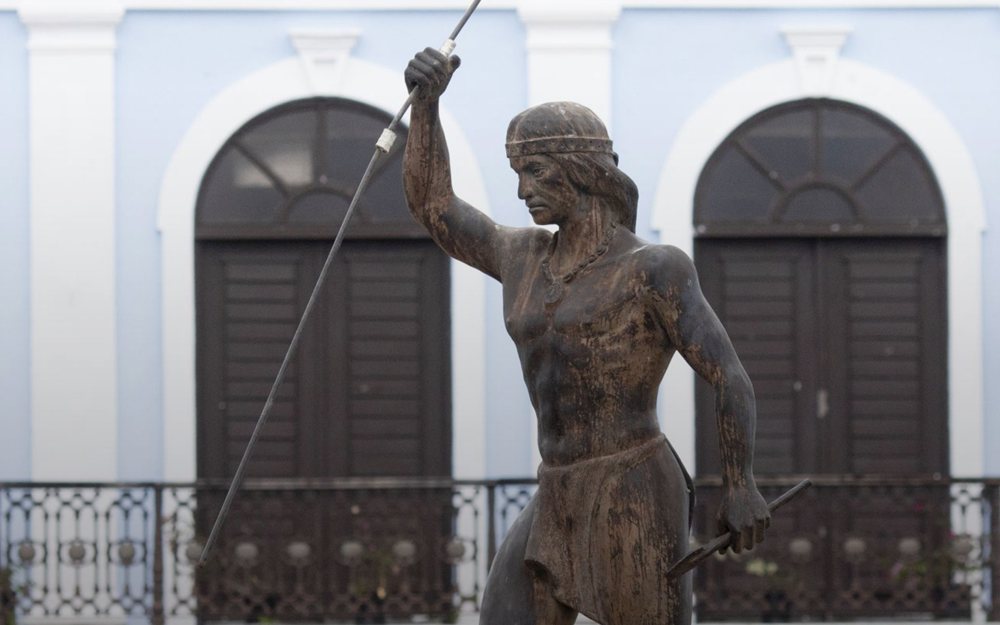

Placita del Canovanense

Localizada en la entrada principal del pueblo en la Carretera Núm. 3. Es distinguida por las esculturas de dos estatuas representativas; una, del Cacique Canóbana y la otra, de una mujer-madre indígena, con un niño en los brazos, simbolizando la unión familiar y reafirmando nuestras raíces.
En sus paredes se encuentran incrustadas tarjas de bronce que muestran utensilios y herramientas que utilizaban los indios.
Pueden visitar la Placita del Canovanense en:
- Dirección: 93HX+GM2, Cll Muñoz Rivera, Canóvanas, 00729
La Antigua Ceiba

Ubicada en la Calle Palmer, frente a la antigua escuela Andrés Flores López. Ha sido escenario de miles de logros estudiantiles, con sus más de 300 años. Son muchas las clases graduandas que han utilizado su frondoso follaje y grueso tronco como fondo para sus fotos, convirtiéndolo en uno de sus íconos culturales.
Pueden visitar la Antigua Ceiba en:
La Casa Museo Jesús Toribido Piñero o La Casa Rosada
Localizada en la carretera número 3 (Avenida 65th. De Infantería), Km. 15.4 frente a la entrada del Hipódromo Camarero; forma parte de nuestro viaje cultural por el centro urbano tradicional. Fue construida alrededor del año 1931. En ella vivió el ilustre puertorriqueño que, a falta de estudios de investigación histórica, se le conoce únicamente como el primer gobernador puertorriqueño. El Instituto de Cultura Puertorriqueña, por gestiones de la Administración Municipal de Canóvanas y con la generosa colaboración de los hijos del fenecido exgobernador, Haydeé y José Emilio Piñero, rescataron este lugar, para que sirva de reconocimiento a la vida y obra de Jesús T. Piñero. Además, muestra el interior de una residencia recreada al estilo de vida de una familia puertorriqueña de los años 1930-1950.
Pueden visitar la Casas Museo Jesús Toribido Piñero o la Casa Rosada en:
- Dirección: PR-3 Km. 15.4, Canovanas, Canóvanas 00729
- Número telefónico: (787)-751-0178
Hipódromo Camarero
Único en Puerto Rico. Sede para la celebración de eventos deportivos locales e internacionales. Entre sus instalaciones se puede mencionar su Club House del Terrace Room, donde se disfruta de un ambiente agradable, cómodo y elegante para actividades o para compartir con familiares y amigos de su excelente comida. Todo el que disfrute de la pasión de competir y de la emoción de ganar tiene en el Hipódromo Camarero el lugar ideal durante todo el año. Es a su vez la pista más reconocida en todo el Caribe. Se ha celebrado el Clásico del Caribe con la participación de caballos traídos de diversos países. Localizado en la Carretera Número 3, Km. 15.3 frente a la entrada de la Casa Museo Jesús T. Piñero.
Pueden visitar el Hipódromo Camarero en:
- Dirección: Carr 3 Km 15.3 Avenida 65 de Infantería, Canovanas, 00729
- Website: hipodromo-camarero.com
- Número telefónico: (787)-641-6060